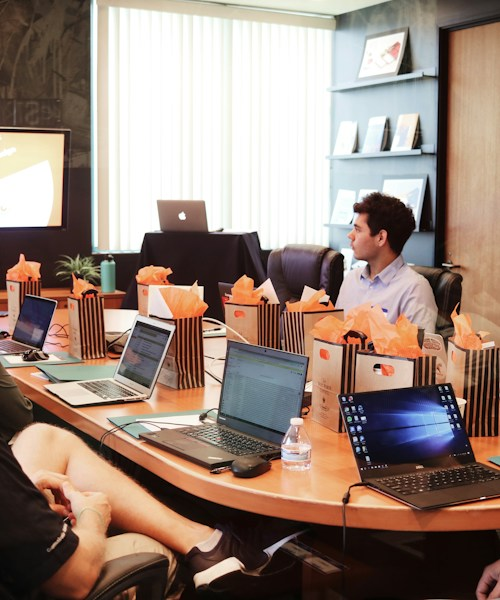
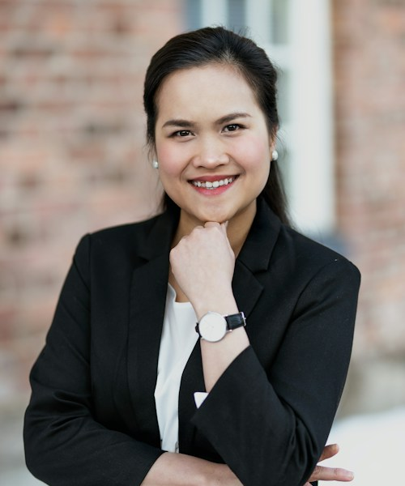

Excellence Without Compromise
We hold our faculty, content, and delivery to the highest professional standards — consistently, without exception.
Who We Are
We forge leaders capable of operating with clarity, conviction, and consequence — at the frontier of business and social impact.
Our Origin
Frontiers Executive Institute was established in 2009 after a clear observation: Africa had no shortage of intelligent, motivated professionals — but too few had access to the kind of leadership formation that changes how people think, decide, and lead.
Our founders — drawn from senior government, the private sector, and the development community — designed FEI to fill that gap: not with imported curricula, but with contextually grounded, rigorously designed programmes built for African realities.
Today, FEI serves over 2,400 alumni across 18 countries, with programmes tailored to corporate executives, government officials, NGO leaders, and high-potential managers.
Our Journey
Founded in Lagos by a consortium of public sector and private enterprise leaders.
Launched the flagship Executive Leadership Programme with its first cohort of 42 senior managers.
Opened the East Africa office in Nairobi; exceeded 500 alumni across 8 countries.
Launched the NGO Leadership Masterclass; partnered with UNDP for capacity delivery across francophone Africa.
Surpassed 2,000 alumni; recognised among Africa's top 5 executive development institutions.
Launched the Social Enterprise Growth Lab; expanded into diaspora programming across Europe and North America.
Our Values
We hold our faculty, content, and delivery to the highest professional standards — consistently, without exception.
We challenge comfortable thinking. Our programmes are designed to disrupt and elevate, not merely inform.
Everything we build is measured against one question: did it make the leader — and therefore the institution — stronger?
We exist to develop leadership at scale for Africa and its diaspora. This is both our market and our mission.
Leadership
Founder & Executive Chairman
Former DG of the National Development Authority, with 28 years of leadership at the intersection of public policy and private enterprise.

Chief Executive Officer
MBA from London Business School. Former VP at Actis Private Equity. Leads FEI's strategic direction and institutional partnerships.
Director, Programmes
PhD in Organisational Psychology. Designed capacity-building curricula deployed across 14 African nations.

Director, NGO Partnerships
Fifteen years building civil society capacity across West and East Africa. Formerly with the Bill & Melinda Gates Foundation.
From cohort enrolments to bespoke organisational programmes, we work with you to design the right solution for your institution.